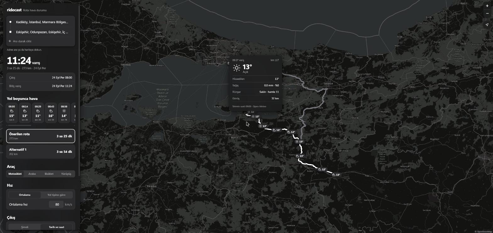

ridecast: weather for the moment you get there
every weather app answers the wrong question for a motorcycle ride. it tells me what the sky is doing in Eskişehir now, when what I need to know is what it will be doing at 11:24, when I get there, and what it did on the pass I cross at 09:30. ridecast is a web app that answers that: I give it a route, a speed, breaks and a departure time, and it puts the forecast for my arrival time on every point along the line. this post grows with every stage of the build, so it is a work log more than a summary.
the plan
the app is Vite, TypeScript and Leaflet, with no backend. every service it talks to is free and keyless: Nominatim for address search, the OSRM demo server for routes, Open-Meteo for the forecast, and later Overpass for fuel stops. the rule that shaped the code is that everything that decides something (arrival times, which forecast hour applies, later the risk score) lives in src/core, with no DOM, no Leaflet and no fetch, so it can move to a phone app later and so it can be tested without a browser.
| stage | what it added | how it was checked |
|---|---|---|
| 1 | map, address search, map clicks, routes with alternatives | a coordinate-order test, a faked OSRM outage shows an error |
| 2 | vehicle type, average or per-road-type speed, departure time, arrival times | 6 tests; three speed settings match a hand calculation on a real route |
| 3 | breaks: click the route, drag, set minutes, or place them automatically | 7 tests; every later arrival moves by exactly the break |
| 4 | forecast along the route, plus a redesign | 6 tests; a map value matches the raw Open-Meteo number |
| 5 | risk levels, wind chill, wet road estimate, darkness, rain advice for breaks | 14 tests; injected rain turns the route orange and the break advice matches a hand calculation |
which road am I on
a car and a motorcycle are not slower than OSRM in the same way. on a motorway I ride faster than OSRM's car estimate, in town slower. so stage 2 lets me set one speed per road type, and that needs the road type, which the demo server does not give. I printed the average speed of every OSRM step from Kadıköy to Eskişehir: the O-4 and O-5 motorways came out at 95 to 104 km/h, the D-100 and D-650 main roads at 82 to 88, and city streets at 40 to 65. the guess checks the road number first (O-4 is a motorway, D-100 a main road, which is how Turkey numbers them), and falls back to the step speed: 90 km/h and up counts as motorway, 70 and up as main road. the app labels it as an estimate, because a fast provincial road with no number still counts as urban.
| setting, Kadıköy to Eskişehir, 273 km | time |
|---|---|
| 80 km/h average | 3 h 25 min |
| motorcycle defaults per road type (110 / 80 / 40) | 3 h 47 min |
| car defaults per road type (120 / 90 / 45) | 3 h 23 min |
the per-road-type time is longer than the flat 80, because 56 km of that route counts as urban at 40 km/h. ferries keep OSRM's own duration, since my speed does not apply on a boat.
breaks move everything after them
the arrival-time code builds a timeline: a distance and a clock time at every step boundary. a break is two boundaries at the same distance, one when I stop and one when I leave. that makes the rule easy to test: every time before the break stays where it was, and every time after it moves by exactly the break. the chart is the stage 3 check on the same route, leaving at 08:00 at 80 km/h: one break I clicked at km 107 and set to 30 minutes, and two automatic 10 minute breaks every 100 km.
the automatic breaks sit on a timeline built without breaks, so the 30 minute stop does not push the next automatic one further down the road. the first version got that wrong in the test, not the code: I expected the second break at 09:30 and it was at 09:40, because 60 minutes of riding plus a 10 minute break plus 30 more minutes is 100, not 90. breaks are stored as points on the map, so switching to the alternative route and back puts them where they were.
the forecast along the line
stage 4 samples the route about every 15 minutes of driving, at most 30 points, and sends all of them to Open-Meteo in one request. the points are spaced by OSRM's own duration, not by my speed, on purpose: when I change the speed or add a break, the points stay put and only their arrival times move, so the next render reuses the cached forecast instead of asking again. coordinates are rounded to 0.05 degrees (about 5 km) for the same reason. each point then takes the forecast hour closest to its arrival, and shows nothing if the closest hour is more than 90 minutes away.
to check the matching I compared one number with the API directly. the first point on the test route rounds to 41.00, 29.00; Open-Meteo gives 14.5° there at 08:00 the next morning, and the capsule on the map says 15°. the point at km 117, reached at 09:27, uses the 09:00 hour, because 27 minutes is closer than 33. I also blocked Open-Meteo in the browser: the strip says the forecast could not be loaded and offers a retry, and the retry works. one retry during testing took the full 15 second timeout on a slow reply, which is exactly the case the message is for.

making it feel like an app
the first three stages had a sidebar next to a map, which works and looks like a web page. before stage 4 I redesigned it with one brief: what would a ride app look like if Uber and Apple made it together. the map is now the whole screen. on a phone the controls live in a bottom sheet with a grab handle that snaps between a peek and full height; on a desktop the same sheet floats as a card. the route is an ink line on a contrasting casing, the start is a dot and the destination a square joined by a thin rail, the arrival time is the biggest thing on the screen, and the settings are grouped lists with segmented controls. it follows the system light or dark theme.
the muted map took a detour. the usual keyless grey basemap now draws "API KEY REQUIRED" over every tile when the request comes from a browser, so the app uses the standard OpenStreetMap tiles and mutes them with a CSS filter: grey for light mode, inverted and grey at night.
judging the weather
stage 5 turns numbers into warnings. every point gets a level from none to high, and every threshold lives in one config file, one set per vehicle. the motorcycle is the strictest: 0.1 mm of rain is already a low warning, gusts start counting at 35 km/h, and a wet road is a medium one. a car gets the same weather with far fewer warnings, and a test pins that: 0.6 mm of rain and 45 km/h gusts give a motorcycle three warnings and a car one.
the cold warning does not use the air temperature. on a bike the air moves at riding speed plus whatever part of the wind comes from ahead, so the app takes the route's heading at each point, adds the headwind part to the speed the timeline says I am riding there, and puts that into the wind chill formula used by Environment Canada. I checked the formula against two values of their table (-5° at 30 km/h feels like -13, -10° at 20 km/h like -18). on a real night test from Kadıköy the last 100 km came out at a felt -1°, a high warning, while the forecast card still showed single-digit air temperatures above zero. the formula is only defined up to 10°, so above that the app says nothing about cold.
the wet road is a guess and the app says so: rain in the arrival hour or the two hours before it makes the road damp or wet, and the same near freezing makes it an ice risk. darkness comes from each day's sunrise and sunset at that point, and dark parts of the route get a dotted pattern on top of the risk colour.
to test the colours on a dry day I forced 2 mm/h of rain into the 09:00 and 10:00 forecast hours in the browser. the route turned orange from km 59 to the end (rain, then the wet road it leaves behind), and a 30 minute break at km 100, from 09:15 to 09:45, said that the rain stops 45 minutes after it and suggested 75 minutes. by hand: the 11:00 hour is dry, so the rain ends at 10:30, and 10:30 minus 09:45 is 45. one rule got softer after the first real run: fog in the weather code with 8.2 km of visibility was rated medium, which is silly, so fog alone is now low and the visibility decides the rest.
the redesign also had a bug that only a wide screen showed: the CSS filter that mutes the map was on the whole tile layer, and at 2560 px the browser stopped painting it past about 1,750 px. filtering each tile instead fixed it.
not shown yet
the levels are per sample point, about every 15 minutes of driving, so a short shower between two points can slip through. the thresholds are my own starting values, not from a standard, and nothing here has been tried on a real ride yet. the rest of the build continues in ridecast part 2: from warnings to decisions.